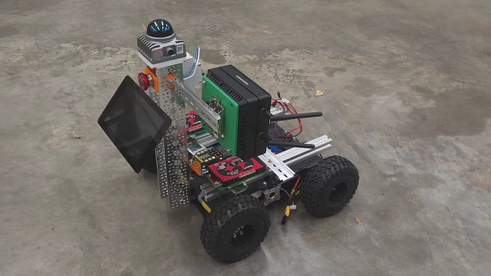
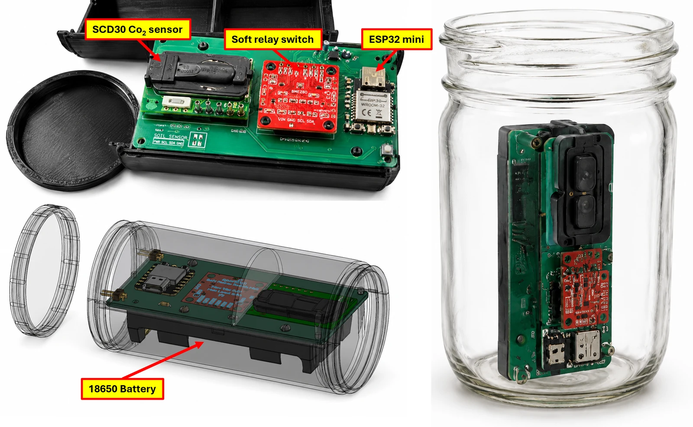

PhD research · In progress
Autonomous Pest Trap Service Robot
RGB-D perception and oriented trap detection on a mobile platform. Navigation and manipulation integration are in development.
View project detailsPROJECTS
Explore the problem, the engineering contribution and the current stage of each project.

PhD research · In progress
RGB-D perception and oriented trap detection on a mobile platform. Navigation and manipulation integration are in development.
View project details
PhD research · Validation underway
Custom electronics, enclosure design and wireless telemetry for chamber and jar measurements.
View project details
Master’s research
Computer-vision-based check-row rice-transplanting control for the System of Rice Intensification.
View project detailsCSIR–CMERI · Project contributions
Embedded programming, field mapping and sensor troubleshooting across CMERI research projects.
View project detailsBarnstorm Agtech · Internship
SolidWorks design and force analysis for a custom three-point linkage.
View project detailsB.Tech. · Design project
Mechanical design project completed during undergraduate agricultural engineering studies.
View project detailsOPPORTUNITIES & COLLABORATION
Open to internships and full-time R&D roles in robotics, embedded systems and precision agriculture.